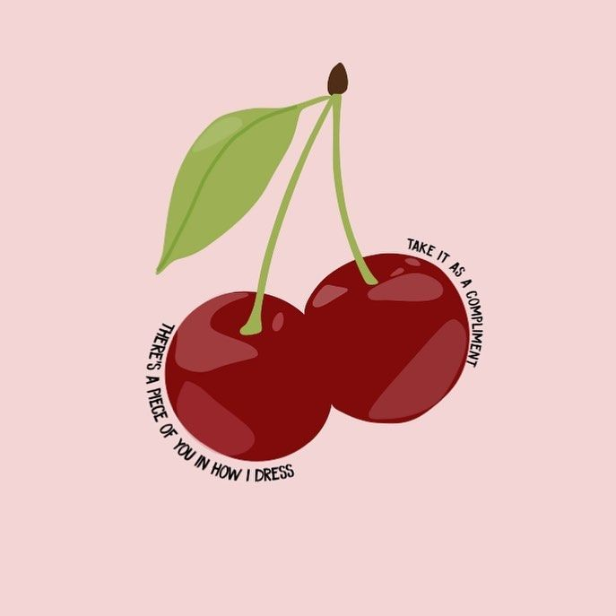

Cherry
Cherry is my second favorite Harry Styles song. It is the fifth song off his second album Fine Line. Like Sweet Creature the acoustic guitar use makes the song more personal and more sorrwoful. Cherry is one of the singer's saddest songs in my opinion. In te lyrics Harry talks about missing an ex-girlfriend and being jealous of her new boyfriend. It has an element of pettiness to it as well which gives his fans a deep view on how he deals wit heartbreak.

Lyrics
Don't you call him "baby"
We're not talking lately
Don't you call him what you used to call me
I, I confess
I can tell that you are at your best
I'm selfish so I'm hating it
I notice that
There's a piece of you in how I dress
Take it as a compliment
Don't you call him "baby"
We're not talking lately
Don't you call him what you used to call me
I, I just miss
I just miss your accent and your friends
Did you know I still talk to them?
Does he take you walking 'round his parents' gallery?
Don't you call him "baby"
We're not talking lately
Don't you call him what you used to call me
Don't you call him "baby"
We're not talking lately
Don't you call him what you used to call me
Back